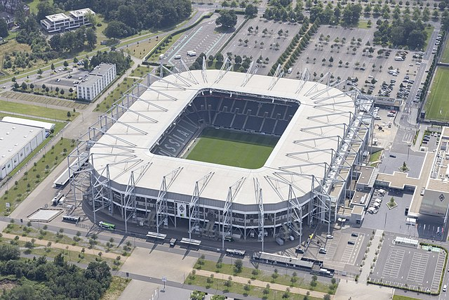
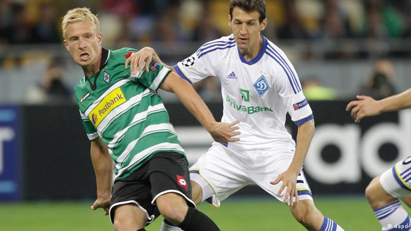

Fanshop
Stadion
Startseite
Fanshop
Gründungsdatun
Historie
Historie von Gladbach
Der Fußballverein Borussia Mönchengladbach wird gegründet
1965 steigt die Borussia aus Mönchengladbach in die Bundesliga auf
In den 70er wird Gladbach 5 mal Deutscher Meister und holt 2 mal den UEFA- Pokal
1999 steigt Gladbach erstmals in die 2te Liga ab
Borussia schafft den Wiederaufstieg in die erst Bundesliga

Eröffnung des neuen Stadions der Borussia. Der "Borussia Park" im Juli 2004
Erneuter Abstieg in die 2te Bundesliga 2007. 2008 kehrte die Borussia aber sofort wieder in die Bundesliga zurück

Als Tabellenvierter qualifiziert sich Borussia erstmals seit 16 Jahren wieder für einen internationalen Wettbewerb (2012)
Borussia qualifiziert sich als Tabellendritter erstmals für die Gruppenphase der UEFA Champions League (2015)
Der Gebäudekomplex „Borussia-8-Grad" mit H4-Hotel, FohlenWelt, FohlenShop, Arztpraxen und Medical Park wird eröffnet (2019)